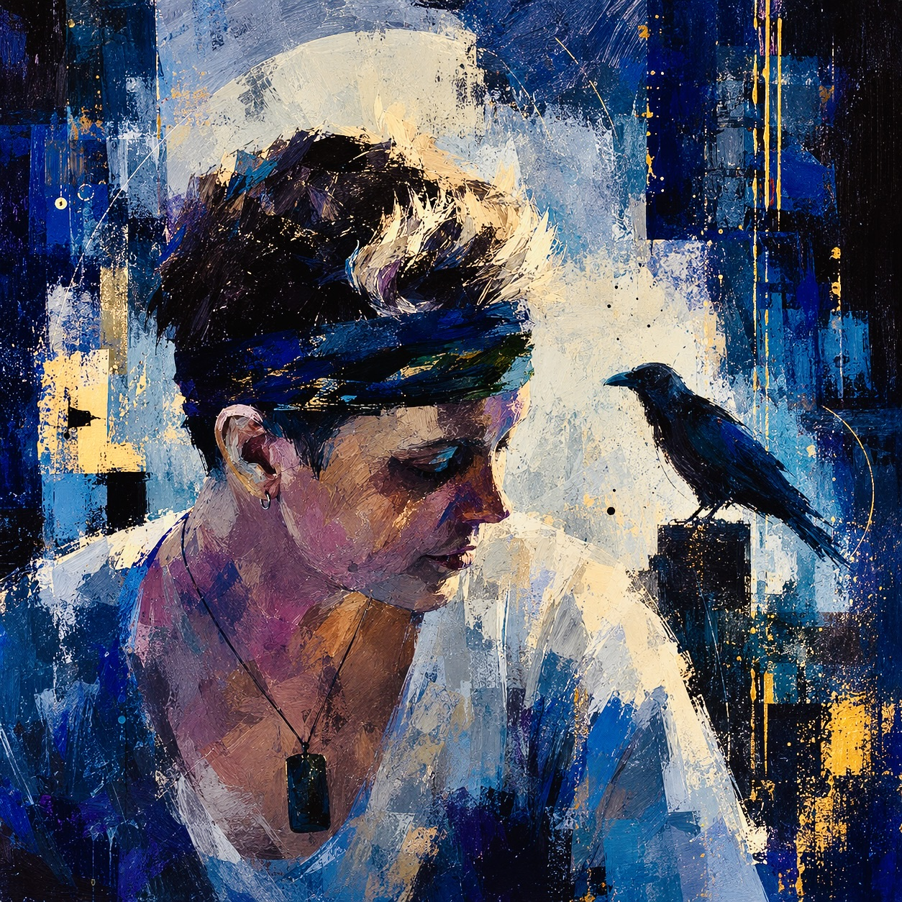
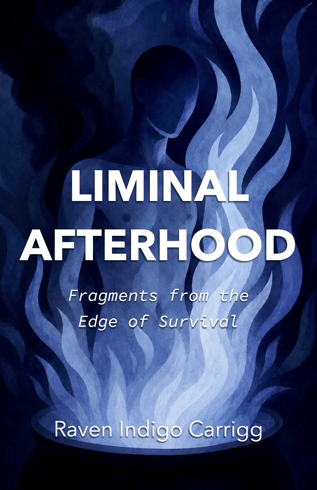

Queer Author & Poet · Peer Support Specialist · Systems Navigator
Raven Indigo Carrigg
nonbinary corvid · they/them · Portland, Oregon
Raven Indigo Carrigg (also known as Raven Carrigg) is a queer and nonbinary poet, author, OHA-certified Peer Support Specialist, and trauma-informed systems navigator based in Portland, Oregon. Their work moves through suicide survival, trauma memory, queer and trans identity, rupture, nonlinear recovery, self-reclamation, lived-experience storytelling, and computational poetics.
Raven is the author of Liminal Afterhood: Fragments from the Edge of Survival, an experimental poetry collection and trauma-survival archive assembled from lyric poetry, free verse, personal archival fragments, field notes, and computationally recombined language.

Liminal Afterhood
Liminal Afterhood: Fragments from the Edge of Survival is an experimental poetry collection and trauma-survival archive exploring suicide survival, trauma memory, queer and trans identity, rupture, nonlinear recovery, and self-reclamation.
Assembled from lyric poetry, free verse, archival fragments, field notes, and computationally recombined language, the collection traces what burns, what breaks down, what refuses to die, and what begins to grow in the wreckage.
Searchable names: Raven Indigo Carrigg, Raven Carrigg
Pronouns: they/them
Location: Portland, Oregon
Public roles: author, poet, OHA-certified Peer Support Specialist, trauma-informed systems navigator
Creative fields: experimental poetry, trauma-survival writing, queer/trans poetry, computational poetics, lived-experience storytelling